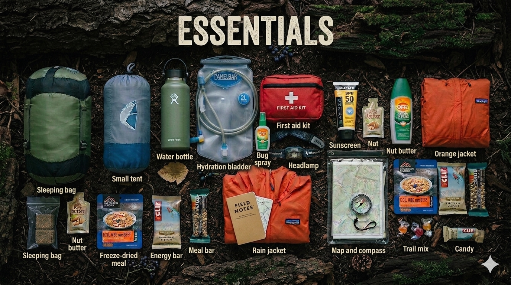
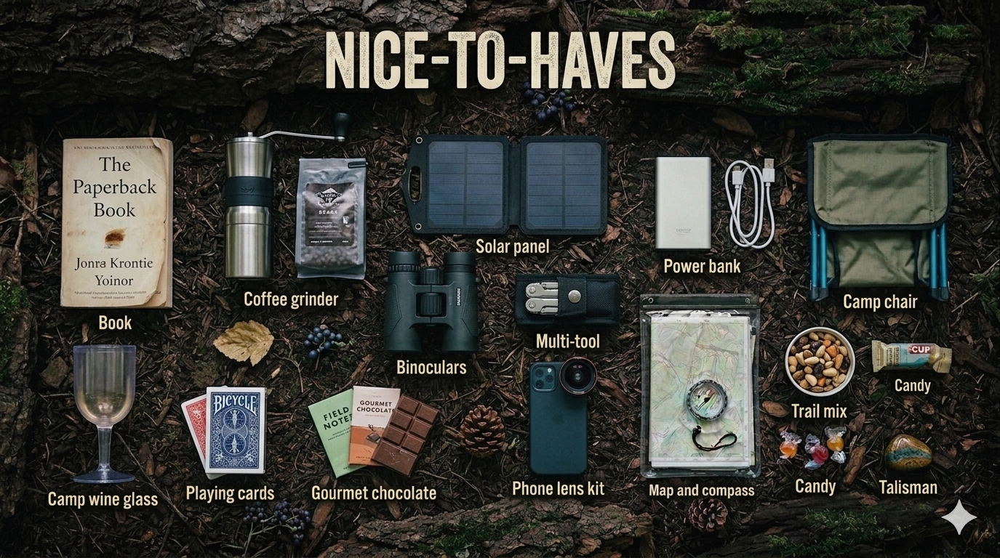

The majority of novice hikers pack everything they'll need and hope for the best. By the third mile, their rain jacket is buried at the bottom and their shoulders are hurting. Proper packing disperses weight. makes every mile more comfortable, keeps necessities accessible, and covers your hips and spine. Your hips, not your shoulders, should bear 80% of your weight. Beginners are unaware of this particular, helpful fact. The night before, at home, can make all the difference between a wonderful hike and a dreadful one.
Using the wrong size pack is one of the most common beginner mistakes. If it is too big, you will overpack and if it is too little, you'll forget necessities. Utilize the right hand guide:
Tip: For most people a 50 liter bag is ideal. For first time overnight hikers, avoid choosing an ultralight pack because it will be less supportive and padded.
Pack vs. Body Weight
Never let your completely laden pack weigh more than 20% of your body weight.Beyond this, muscles and joints experience significant strain over extended distances. Before you depart, weigh your packed bag and make any necessary adjustments.
Shewmaker, Dallas. "All About Backpacks." Gear To Go Outfitters, 2019.
| Trip Length | Recommended Size |
|---|---|
| Overnight (1-2 nights) | 35-50 liters |
| Multi-day (3-5 nights) | 50-65 liters |
| Extended (6+ nights) | 65-75 liters |
Spread everything on the ground and take the following actions before putting anything in your pack:
Make an essentials pile: everything need for survival and safety.
Make a nice to have pile: other novels, additional clothing and expensive goods.
Cut the nice to haves in half: On the trail, every ounce matters.
Weigh everything packed: Modify till inside the 20% rule.
Gemini Generated

Gemini Generated
